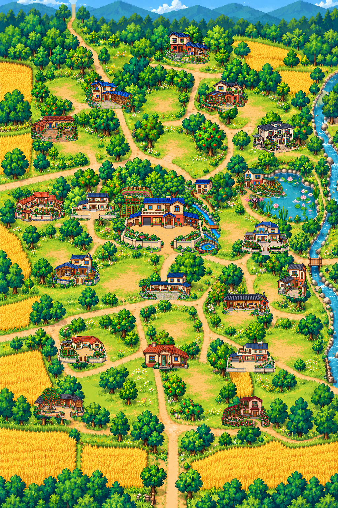

<!doctype html>
<html lang="zh-CN">
<meta charset="utf-8">
<meta name="viewport" content="width=device-width,initial-scale=1">
<title>裳泓村 · 方案二小地图</title>
<style>
  :root{color-scheme:dark;font-family:"PingFang SC","Microsoft YaHei",sans-serif}
  *{box-sizing:border-box}
  body{margin:0;min-height:100vh;display:grid;place-items:center;background:#15251e;color:#fff8da}
  .shell{width:min(94vw,560px);padding:14px;border:3px solid #7a5430;border-radius:18px;background:linear-gradient(#3b291c,#211912);box-shadow:0 18px 50px #0009}
  .title{display:flex;align-items:center;justify-content:space-between;margin:0 4px 10px}
  .title strong{font-size:20px;letter-spacing:.08em}.title span{color:#e7c983;font-size:13px}
  .map{position:relative;width:100%;aspect-ratio:2/3;overflow:hidden;border:2px solid #c99c55;border-radius:12px;background:#78aa48}
  .map>img{width:100%;height:100%;display:block;image-rendering:pixelated}
  .hotspot{position:absolute;padding:0;border:2px solid transparent;border-radius:10px;background:transparent;cursor:pointer;z-index:2}
  .hotspot:hover,.hotspot:focus-visible,.hotspot.on{outline:none;border-color:#ffe16a;filter:drop-shadow(0 0 6px #ffdb4d);background:#ffe16a19}
  .hotspot::after{content:attr(aria-label);position:absolute;left:50%;bottom:calc(100% + 4px);transform:translateX(-50%);white-space:nowrap;opacity:0;pointer-events:none;padding:4px 7px;border:1px solid #f1cf80;border-radius:6px;background:#2a1c12eb;color:#fff4cb;font-size:12px;font-weight:700}
  .hotspot:hover::after,.hotspot:focus-visible::after,.hotspot.on::after{opacity:1}
  .player{position:absolute;z-index:3;width:15px;height:15px;margin:-7px;border:2px solid white;border-radius:50% 50% 50% 0;transform:rotate(-45deg);background:#f0a928;box-shadow:0 2px 7px #000b;pointer-events:none;transition:left .24s ease,top .24s ease}
  .toast{min-height:39px;display:flex;align-items:center;justify-content:center;margin-top:10px;border:1px solid #755632;border-radius:9px;background:#17110d;color:#f6df9d;font-size:14px}
  .hint{margin:8px 2px 0;color:#bda67e;font-size:12px;text-align:center}
</style>
<main class="shell">
  <div class="title"><strong>裳泓村</strong><span>点击房屋，一键到门前</span></div>
  <div class="map" id="map">
    
    <i class="player" id="player" style="left:50%;top:52%"></i>
  </div>
  <div class="toast" id="toast">请选择要去的房屋</div>
  <p class="hint">关闭地图：Esc　键盘/手柄可逐户切换并确认</p>
</main>
<script>
const homes=[
["erba","二爸家",495,95,140,100],["daba","大爸家",258,240,145,90],
["flower","花房小楼",608,241,144,98],["whitebrick","白砖小院",764,366,141,98],
["grape","葡萄架小院",92,350,145,81],["sunflower","向日葵之家",712,507,145,96],
["laowu","阿鱼家后方老屋小楼",588,529,68,61],["h5","凯凯蜂蜜小院",42,579,155,92],
["h2","2A · 缝补人家",212,582,145,87],["ayu","0A · 阿鱼家",420,588,170,112],
["h6","6A · 花窗人家",732,669,145,102],["h3","小涛磨坊",148,766,155,99],
["mayor","村委会",420,823,160,84],["h7","7A · 窄巷人家",840,796,90,107],
["h8","8A · 茶香小院",672,882,145,75],["h4","4A · 田边平房",175,1012,150,87],
["community","村民活动中心",428,1033,145,84],["h1","1A · 蓝瓦人家",685,1034,150,92],
["persimmon","柿树老院",102,1170,155,99],["rose","玫瑰花之家",670,1196,150,98]
];
const map=document.querySelector("#map"),toast=document.querySelector("#toast"),player=document.querySelector("#player");
homes.forEach(function(home){
  const id=home[0],title=home[1],x=home[2],y=home[3],w=home[4],h=home[5];
  const button=document.createElement("button");
  button.className="hotspot";button.dataset.id=id;button.setAttribute("aria-label",title);
  button.style.left=(x/10.24)+"%";button.style.top=(y/15.36)+"%";
  button.style.width=(w/10.24)+"%";button.style.height=(h/15.36)+"%";
  button.onclick=function(){
    const old=document.querySelector(".hotspot.on");if(old)old.classList.remove("on");
    button.classList.add("on");
    player.style.left=((x+w/2)/10.24)+"%";player.style.top=((y+h+14)/15.36)+"%";
    toast.textContent="已直达："+title+"（门前）";
  };
  map.appendChild(button);
});
</script>
</html>
